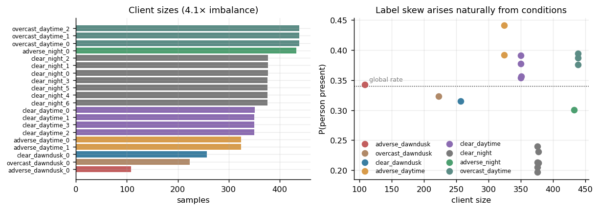

RESEARCH DISCOVERY 01
20 NATURAL CLIENTS · 8 DOMAINS
Natural Heterogeneity from Real Physical Conditions (BDD100K)

Plain English Explanation
Most AI researchers test security defences on synthetic data: they take standard photos of cats and dogs and artificially split them across computers. But real autonomous cars and warehouse robots don't see synthetic data. A delivery vehicle driving in heavy rain at twilight sees a completely different world compared to a vehicle on a bright sunny highway.
We built a federation of 20 realistic vehicle clients directly from 10,000 driving videos across America, grouped by actual weather (clear, overcast, rainy/snowy/foggy) and lighting (day, night, dusk). This created natural size differences (from 108 to 439 images) and natural pedestrian frequency differences without any artificial cheating.
Technical Deep Dive
- BDD100K Real-World Split: 8,822 frames partitioned into 20 clients across 8 natural domains, a 1,500-frame held-out test set, and a 300-frame server reference set (3.4% of federation).
- Dual Skew Mechanics: Produces simultaneous feature skew (activation distribution shifts across lighting/fog) and natural label skew (clear-night pedestrian presence = 0.197 vs adverse-daytime = 0.441).
- Canonical Tail Client: The smallest client,
adverse_dawndusk_0(108 frames), represents the hardest, rarest safety-critical operating condition in the dataset.
| Property | Empirical Value | Architectural Significance |
|---|---|---|
| Total Clients | 20 across 8 natural domains | Realistic fleet size with full synchronous participation |
| Client Dataset Size | 108 to 439 frames (4.1× imbalance) | Reflects uneven real-world sensor collection volume |
| P(person present) | 0.197 (Night) to 0.441 (Adverse Day) | Natural non-IID label distribution |
| Global Base Rate | 0.340 | Balanced classification preventing majority-class cheating |
| Held-Out Test Set | 1,500 frames | Strictly isolated from all client training distributions |
| Server Reference Set | 300 frames (3.4% of federation) | Small root dataset for directional alignment bootstrapping |